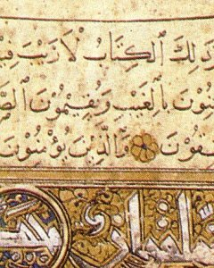

Sacred Texts Islam
Hypertext Quran Pickthall Palmer Part I (SBE06) Palmer Part II (SBE09) Yusuf Ali/Arabic Yusuf Ali English Rodwell
|
 |
Unicode Qur'an |
This is the Qur'an in Arabic, presented using Unicode.
The Unicode Arabic is displayed in parallel with a transliteration into modified International Phonetic Alphabet (IPA). The IPA transliteration is not a pronunciation guide. Rather, it is a mechanical conversion of the Arabic, letter by letter, into equivalent IPA characters. Alef is transliterated by a single quote; double letters are indicated by a following colon (:), some Arabic letters do not have any equivalent in the transliteration. The system used is documented in the Transliteration table. Note that since the transliteration is not exactly one-to-one, the Arabic text should be treated as primary, and the transliteration as a study aid. The file titles, which do not have any vowels in them, are also transliterated automatically using the same system.If you have problems viewing the Unicode Arabic, please refer to the Sacred-texts Unicode page. Note that not all Unicode fonts will display this text completely. We have found that Code 2000 displays some of the Arabic characters as boxes: the Microsoft Arial Unicode MS font, on the other hand, seems to be able to display all of the characters used in this text. Since Unicode support for Arabic is still evolving, we also have a version of the Quran in Arabic which uses GIF files to display the Arabic text.
Transliteration Table
1. الفاتحة 'lf'tḥt
2. البقرة 'lbqrt
3. آل عمران 'ʔl ʕmr'n
4. النساء 'lns'ʔ
5. المائدة 'lm'yʔdt
6. الأنعام 'l'ʔnʕ'm
7. الأعراف 'l'ʔʕr'f
8. الأنفال 'l'ʔnf'l
9. التوبة 'ltwbt
10. يونس ywns
11. هود hwd
12. يوسف ywsf
13. الرعد 'lrʕd
14. إبراهيم 'ʔbr'hym
15. الحجر 'lḥjr
16. النحل 'lnḥl
17. الإسراء 'l'ʔsr'ʔ
18. الكهف 'lkhf
19. مريم mrym
20. طه ṭh
21. الأنبياء 'l'ʔnby'ʔ
22. الحج 'lḥj
23. المؤمنون 'lmwʔmnwn
24. النور 'lnwr
25. الفرقان 'lfrq'n
26. الشعراء 'lʃʕr'ʔ
27. النمل 'lnml
28. القصص 'lqṣṣ
29. العنكبوت 'lʕnkbwt
30. الروم 'lrwm
31. لقمان lqm'n
32. السجدة 'lsjdt
33. الأحزاب 'l'ʔḥz'b
34. سبأ sb'ʔ
35. فاطر f'ṭr
36. يس ys
37. الصافات 'lṣ'f't
38. ص ṣ
39. الزمر 'lzmr
40. غافر ɣ'fr
41. فصلت fṣlt
42. الشورى 'lʃwry
43. الزخرف 'lzxrf
44. الدخان 'ldx'n
45. الجاثية 'lj'θyt
46. الأحقاف 'l'ʔḥq'f
47. محمد mḥmd
48. الفتح 'lftḥ
49. الحجرات 'lḥjr't
50. ق q
51. الذاريات 'lð'ry't
52. الطور 'lṭwr
53. النجم 'lnjm
54. القمر 'lqmr
55. الرحمن 'lrḥmn
56. الواقعة 'lw'qʕt
57. الحديد 'lḥdyd
58. المجادلة 'lmj'dlt
59. الحشر 'lḥʃr
60. الممتحنة 'lmmtḥnt
61. الصف 'lṣf
62. الجمعة 'ljmʕt
63. المنافقون 'lmn'fqwn
64. التغابن 'ltɣ'bn
65. الطلاق 'lṭl'q
66. التحريم 'ltḥrym
67. الملك 'lmlk
68. القلم 'lqlm
69. الحاقة 'lḥ'qt
70. المعارج 'lmʕ'rj
71. نوح nwḥ
72. الجن 'ljn
73. المزمل 'lmzml
74. المدثر 'lmdθr
75. القيامة 'lqy'mt
76. الإنسان 'l'ʔns'n
77. المرسلات 'lmrsl't
78. النبأ 'lnb'ʔ
79. النازعات 'ln'zʕ't
80. عبس ʕbs
81. التكوير 'ltkwyr
82. الإنفطار 'l'ʔnfṭ'r
83. المطففين 'lmṭffyn
84. الإنشقاق 'l'ʔnʃq'q
85. البروج 'lbrwj
86. الطارق 'lṭ'rq
87. الأعلى 'l'ʔʕly
88. الغاشية 'lɣ'ʃyt
89. الفجر 'lfjr
90. البلد 'lbld
91. الشمس 'lʃms
92. الليل 'llyl
93. الضحى 'lḍḥy
94. الشرح 'lʃrḥ
95. التين 'ltyn
96. العلق 'lʕlq
97. القدر 'lqdr
98. البينة 'lbynt
99. الزلزلة 'lzlzlt
100. العاديات 'lʕ'dy't
101. القارعة 'lq'rʕt
102. التكاثر 'ltk'θr
103. العصر 'lʕṣr
104. الهمزة 'lhmzt
105. الفيل 'lfyl
106. قريش qryʃ
107. الماعون 'lm'ʕwn
108. الكوثر 'lkwθr
109. الكافرون 'lk'frwn
110. النصر 'lnṣr
111. المسد 'lmsd
112. الإخلاص 'l'ʔxl'ṣ
113. الفلق 'lflq
114. الناس 'ln's